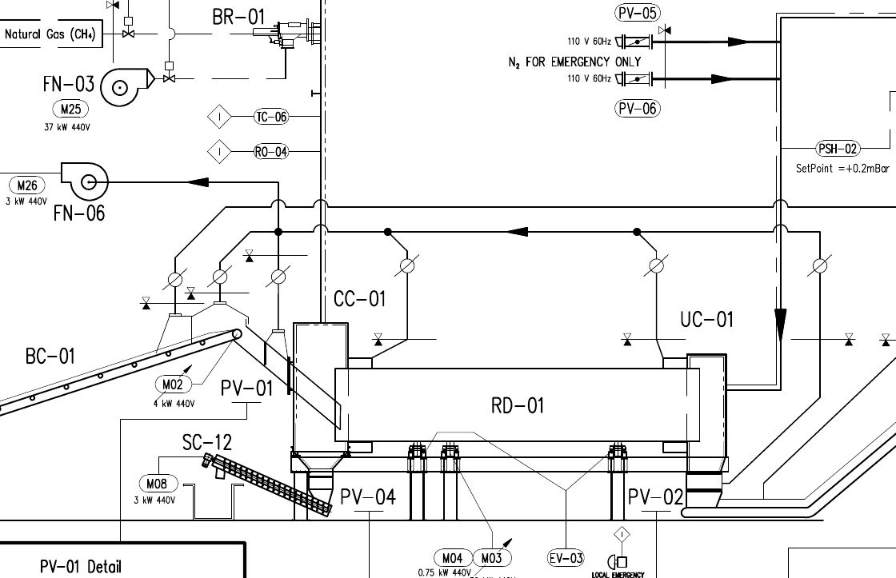
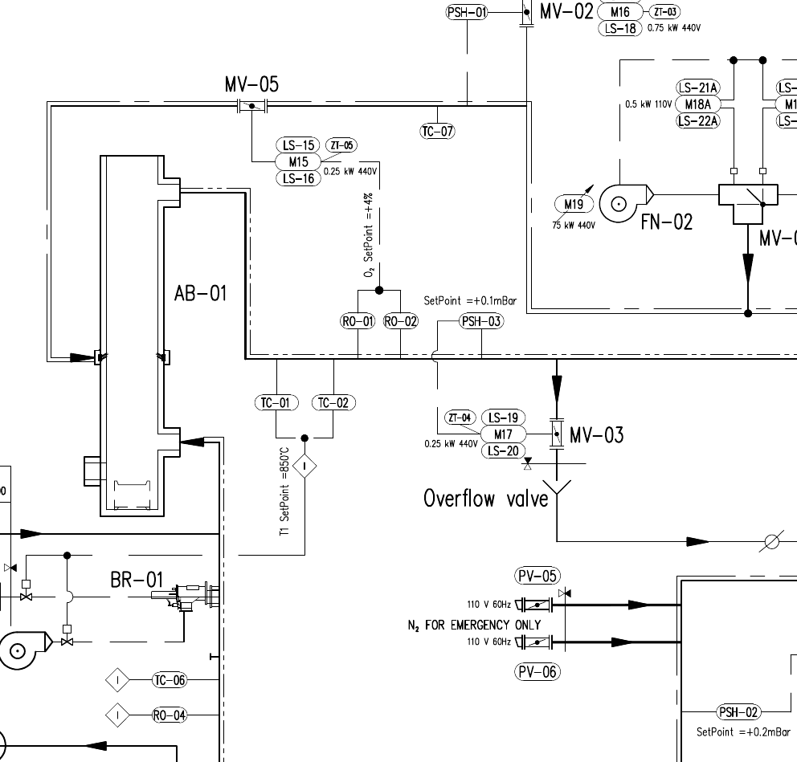
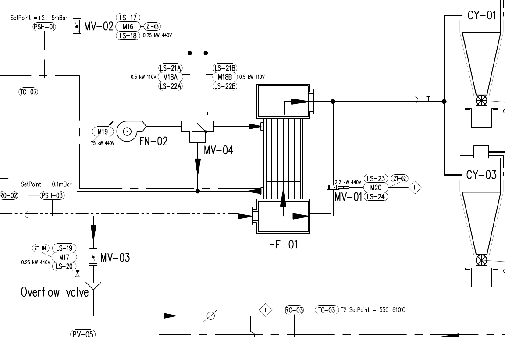

CC01·AB01·HE01 본체 매뉴얼
본체 증상, 주변 장치의 제어와 계측, 시공 구역·접속함을 구분해 근거를 비교합니다.
본체
증상 작업지
참조 계측
원본 네트워크
투입 챔버 · CC01
P&ID의 PV01–RD01 입구 본체와 디코팅 CC챔버의 역할 대응 후보입니다. 본체 전용 출력·LAD는 미식별이며 주변 구동 신호를 직접 태그로 부여하지 않습니다.
기존 명세: 입력 참조0 · 출력0 · HMI0 · 전용LAD0. 여기의 계측/래더 목록은 주변 관계의 참조이며 새 직접 제어 할당이 아닙니다.
P&ID에서 보는 공정 경계

PV01 투입부 오른쪽의 CC01 본체가 RD01 입구에 연결됩니다. SC12/PV04 하부 배출, BR01·TC06·RO04의 상부 관로와 FN06 분기를 같은 도면에서 보되 배관 매체·실물 내부 구조는 별도 확인합니다.
원본 일부를 잘라 표시했습니다. 새로 그린 연결선·실시간 값·정밀 기계도는 아닙니다.
P&ID 전체주변 설비의 역할·제어를 따로 보기
계측 참조 · 설치 위치·소유 확인 전
| 참조 | OEM 회로·원본 설명 | 환산 전달·PLC 근거 | 확인 경계 |
|---|---|---|---|
| TC06 | %IW278 · temperature control outputab-01 FG78 / PDF79 | +24Vdc → X1:195(50mA F) → TC06:+5; TC06:-6 → X1:196 → +PEW278; X1:197 / 78SCH1 {"IN0": ["ON"], "Analog_input": ["TC06"], "Coeff": ["Coeff.COEFF_TC06"], "Zero": ["Coeff.ZERO_TC06"], "OutValue": ["Data.Temp_T6"], "Out_of_range": ["Allarm.TC06_OFR"]} 원본 1742 | 도면→실제 취출부→전원/단자→원시값→환산→표시. 단위·현재 설정·사용 여부 확인 전 |
| RO04 | %IW358 · oxigen control FG81 / PDF82 | RO04 소자+S/-S/-T/+T → 81RO04 H705:1+/2-/3-/4+; 110Vac X1:224(2A F)→15, 0Vac X1:225→16, GND17; 출력7+/8- → X1:226/227 → +PEW358/-PEW358; X1:228 / 81SCH3 {"IN0": ["ON"], "Analog_input": ["R004"], "Coeff": ["Coeff.COEFF_R04"], "Zero": ["Coeff.ZERO_R04"], "OutValue": ["Data.RO04"], "Out_of_range": ["Allarm.RO04_OFR"]} 원본 1751 | 도면→실제 취출부→전원/단자→원시값→환산→표시. 단위·현재 설정·사용 여부 확인 전 |
증상별 조사·원인 배제·후속 확인
CC01-D01 · 원료가 투입되지 않거나 쌓임
- 관찰할 내용
- 막힘 위치·투입량 변화·PV01 각 게이트의 실제 위치·BC01/RD01 운전 응답·최초 알람과 시각을 기록합니다. 현장 관찰은 승인된 정지·격리 절차에 따릅니다.
- 도면·PLC에서 비교
- 게이트 명령/열림·닫힘 기억과 실제 위치를 분리합니다. 원본1911의 R1 Gate 허가, 1935 BC01 요청/출력, 1931 Disable_Load_RD01, 1936 RD01 요청을 각 장치 작업지에서 비교합니다. RD01 회전만으로 투입 허가를 확정하지 않습니다.
- 원인 후보를 나누는 근거
- 허가/요청 없음이면 상위 조건·신호 전달, 출력과 피드백 불일치이면 구동/센서 경로, 실제 이송은 정상인데 국부 퇴적이 관찰되면 본체/원료 상태를 별도 원인 후보로 기록합니다. 관찰 전 원인으로 확정하지 않습니다.
- 필요 자료·복구 확인
- 투입/배출 기계도, 내부 형상·마모부·씰 규격, 원료 조건과 승인된 점검/교체 기준을 확보합니다. 관찰·원인 해소·새 운전 요청·제품 흐름·후속 알람을 각각 기록합니다.
자료 기반 점검 안내입니다. 실제 관찰·수리 완료·정상 판정은 기록되지 않았습니다.
CC01-D02 · 주변 누설·냄새·비정상 온도 또는 퇴적
- 관찰할 내용
- 외부에서 관찰 가능한 발생 위치·시각·연결부/투입부의 흔적과 공정 정지 이력을 기록합니다. 단일 HMI 값으로 본체 기밀을 판정하지 않습니다.
- 도면·PLC에서 비교
- TC06은 P&ID에서 CC01 상부 관로에 표기되고 시공53페이지 3_14는 CC01 TC06이지만 OEM FG78 제목은 OUTPUT AB-01입니다. RO04도 시공 CC01 구역/PEW358과 OEM FG81 OUTLET FN-01 설명을 따로 보존합니다.
- 원인 후보를 나누는 근거
- 계측 채널의 설치 지점·전원·원시값·환산값·표시를 확인한 뒤 본체 관찰과 시간 관계를 비교합니다. 이름·배치 근접·접속함 공유만으로 누설 원인이나 센서 소유를 확정하지 않습니다.
- 필요 자료·복구 확인
- 센서 취출부와 배관 연결 사진, 명판·표찰, 최신 P&ID/제작사 본체 점검 기준을 확보합니다. 해당 값의 정상 범위는 현재 승인된 기준을 확인합니다.
자료 기반 점검 안내입니다. 실제 관찰·수리 완료·정상 판정은 기록되지 않았습니다.
CC01-D03 · 게이트·버너·알람 여러 신호가 함께 이상
- 관찰할 내용
- 동시에 변한 신호·전원/제어반 경보·시각·ENT2TB1 및 각 장치 표찰을 기록합니다. 17HA1 경적과 최초 공정 알람을 구분합니다.
- 도면·PLC에서 비교
- 시공53페이지의 ENT2TB1은 PV01/PV04 신호와 RO04 전원 등의 공유 경계입니다. 3_3/3_30의 두 DC 간선, 3_4 AC 간선, 3_8/3_10/3_12 각 접속함 분기를 구분합니다. 버너14_17/14_18 반복 행은 기존 C02로 남깁니다.
- 원인 후보를 나누는 근거
- 동시 상실이 공유 전원·간선·접속함 경계에 걸리는지 각 장치의 실제 회로와 비교합니다. 두 간선을 자동 중복 제거하거나 CC01 본체 전용 제어라고 병합하지 않습니다.
- 필요 자료·복구 확인
- 양단 케이블 표찰·실제 심선 배정·단자대·전용 버너 배선도를 확인합니다. 실제 측정 위치·사용한 도면 개정·복구 후 개별 장치 응답을 기록합니다.
자료 기반 점검 안내입니다. 실제 관찰·수리 완료·정상 판정은 기록되지 않았습니다.
CC01-D04 · 현장과 HMI/도면의 CC챔버 표시가 다름
- 관찰할 내용
- 배치도 카드·명판·제어반·센서 취출 위치와 화면 명칭/단위를 기록합니다. 본체와 RD01 구동부·BR01을 분리합니다.
- 도면·PLC에서 비교
- CC01 명세의 직접 I/O/HMI/LAD 미식별과 TC06/RO04의 원본 주소·환산 대상을 대조합니다. 시공 구역코드와 PLC 표시 태그 사이에는 설치/DB/화면 이벤트 확인이 필요합니다.
- 원인 후보를 나누는 근거
- 현재 DB 멤버·표시 이벤트·실제 입력 주소가 입증되기 전 태그를 배정하거나 표시를 수정하지 않습니다. 카드의 실물 동일성도 후보 상태를 유지합니다.
- 필요 자료·복구 확인
- 현재 TIA 프로젝트/CPU 비교본·HMI 이벤트 원본·실물 사진을 확보하고 기존 메모/수리 기록에 관찰과 후속 확인을 남깁니다.
자료 기반 점검 안내입니다. 실제 관찰·수리 완료·정상 판정은 기록되지 않았습니다.
이 본체에 남은 확인
씰·내화재·재질·조임값·허용 온도/압력·점검/세정 주기와 내부 작업은 최신 제작사 자료 및 승인된 현장 절차로 확인합니다. 관찰 기록에는 근거 버전·실제 위치·조치 전후 조건을 남깁니다.
재연소 챔버 · AB01
P&ID AB01과 디코팅 재연소로는 역할 대응 후보입니다. 기존 명세의 TC01/TC02 입력 참조는 보존하지만 본체 전용 출력·LAD, 전용010-390 내부 연소 안전순서는 식별/확보 전입니다.
기존 명세: 입력 참조2 · 출력0 · HMI0 · 전용LAD0. 여기의 계측/래더 목록은 주변 관계의 참조이며 새 직접 제어 할당이 아닙니다.
P&ID에서 보는 공정 경계

AB01 본체 아래의 BR01, TC01/TC02 온도 표기, 출구측 RO01/RO02·PSH03, 상부 MV05/TC07 경로를 구분합니다. T1 SetPoint=850°C와 O₂=±4%는 이 P&ID의 과거 표기이며 현재 운전/안전 설정 권고값이 아닙니다.
원본 일부를 잘라 표시했습니다. 새로 그린 연결선·실시간 값·정밀 기계도는 아닙니다.
P&ID 전체주변 설비의 역할·제어를 따로 보기
계측 참조 · 설치 위치·소유 확인 전
| 참조 | OEM 회로·원본 설명 | 환산 전달·PLC 근거 | 확인 경계 |
|---|---|---|---|
| TC01 | %IW272 · temperature chamber ab-01 FG77 / PDF78 | +24Vdc → X1:186(50mA F) → TC01:+5; TC01:-6 → X1:187 → +PEW272; X1:188 / 77SCH1 {"IN0": ["ON"], "Analog_input": ["TC01"], "Coeff": ["Coeff.COEFF_TC01"], "Zero": ["Coeff.ZERO_TC01"], "OutValue": ["Data.Temp_TC01"], "Out_of_range": ["Allarm.TC01_OFR"]} 원본 1739 | 도면→실제 취출부→전원/단자→원시값→환산→표시. 단위·현재 설정·사용 여부 확인 전 |
| TC02 | %IW274 · safety temperature chamber ab-01 FG77 / PDF78 | +24Vdc → X1:189(50mA F) → TC02:+5; TC02:-6 → X1:190 → +PEW274; X1:191 / 77SCH2 {"IN0": ["ON"], "Analog_input": ["TC02"], "Coeff": ["Coeff.COEFF_TC02"], "Zero": ["Coeff.ZERO_TC02"], "OutValue": ["Data.Temp_TC02"], "Out_of_range": ["Allarm.TC02_OFR"]} 원본 1740 | 도면→실제 취출부→전원/단자→원시값→환산→표시. 단위·현재 설정·사용 여부 확인 전 |
| TC07 | %IW280 · temperature control inputsmoke FG78 / PDF79 | +24Vdc → X1:198(50mA F) → TC07:+5; TC07:-6 → X1:199 → +PEW280; X1:200 / 78SCH2; FG78·107 SPARE 표기 {"IN0": ["ON"], "Analog_input": ["TC07"], "Coeff": ["Coeff.COEFF_TC07"], "Zero": ["Coeff.ZERO_TC07"], "OutValue": ["Data.TC_07"], "Out_of_range": ["Allarm.TC07_OFR"]} 원본 1743 | 도면→실제 취출부→전원/단자→원시값→환산→표시. 단위·현재 설정·사용 여부 확인 전 |
| RO01 | %IW352 · oxigen control FG80 / PDF81 | RO01 소자+S/-S/-T/+T → 80RO01 H705:1+/2-/3-/4+; 110Vac X1:209(2A F)→15, 0Vac X1:210→16, GND17; 출력7+/8- → X1:211/212 → +PEW352/-PEW352; X1:213 / 80SCH1 {"IN0": ["ON"], "Analog_input": ["R001"], "Coeff": ["Coeff.COEFF_R01"], "Zero": ["Coeff.ZERO_R01"], "OutValue": ["Data.Oxigen_RO01"], "Out_of_range": ["Allarm.Ro01_OFR"]} 원본 1748 | 도면→실제 취출부→전원/단자→원시값→환산→표시. 단위·현재 설정·사용 여부 확인 전 |
| RO02 | %IW354 · oxigen control FG80 / PDF81 | RO02 소자+S/-S/-T/+T → 80RO02 H705:1+/2-/3-/4+; 110Vac X1:214(2A F)→15, 0Vac X1:215→16, GND17; 출력7+/8- → X1:216/217 → +PEW354/-PEW354; X1:218 / 80SCH3 {"IN0": ["ON"], "Analog_input": ["R002"], "Coeff": ["Coeff.COEFF_R02"], "Zero": ["Coeff.ZERO_R02"], "OutValue": ["Data.Oxigen_RO02"], "Out_of_range": ["Allarm.RO02_OFR"]} 원본 1749 | 도면→실제 취출부→전원/단자→원시값→환산→표시. 단위·현재 설정·사용 여부 확인 전 |
증상별 조사·원인 배제·후속 확인
AB01-D01 · TC01/TC02 값이 다르거나 온도 고장 반복
- 관찰할 내용
- 두 채널의 원시값·환산값·OFR·화면값·설정값·최초 알람과 시각을 함께 기록합니다. 어느 채널이 실제 기준인지 추정하지 않습니다.
- 도면·PLC에서 비교
- OEM FG77/PDF78과 백업은 TC01 IW272, TC02 IW274를 AB01 챔버 온도로 설명합니다. 원본1739/1740 환산과 BR01 조절 경로의 Manage_TC1_2.PID_Ref_Temp 선택, 1979 온도 알람, 1986 두 온도 비교를 구분합니다. 시공56페이지 6_23/6_24는 HE01 구역 표기입니다.
- 원인 후보를 나누는 근거
- 실제 취출 위치·전달/계수·OFR·선택 신호·다른 쓰기가 확인되기 전 본체 과열과 채널 오류를 합쳐 판정하지 않습니다. 이름이 safety여도 전용 연소보호 기능/등급을 증명하지 않습니다.
- 필요 자료·복구 확인
- 센서 위치·교정·범위·현재 DB/선택 SCL 원문·알람 설정과 전용 연소보호 자료를 확보합니다. 두 채널을 대체/우회하지 않고 관찰 근거를 기록합니다.
자료 기반 점검 안내입니다. 실제 관찰·수리 완료·정상 판정은 기록되지 않았습니다.
AB01-D02 · 버너가 시작하지 않거나 Lock Out 이후 정지
- 관찰할 내용
- Start 요청·두 Enable·FN03 응답·BR01 상태·MV03 실제 위치·전용 제어기의 최초 알람을 시각순으로 기록합니다.
- 도면·PLC에서 비교
- 1858의 Start_Burner 요청 Reset, 1866의 요청·NOT Lock Burner·FN03 응답→Enable(1), 추가 Enable→Q6.5 원격 출력과 1868의 상태·세정/기동 요청을 구분합니다. OEM 전용010-390 응답·내부 보호는 별도 근거가 필요합니다. 시공64페이지 14_3/14_4의 AB01 6SB2 케이블은 비상정지 장치의 전체 기능/안전 등급을 증명하지 않습니다.
- 원인 후보를 나누는 근거
- 본체 상태·GME 허가 억제·전용 제어기 Lock Out은 다른 원인 범위입니다. GME 요청이나 Reset 래치 해제를 내부 퍼지/점화/화염 복구 완료로 판단하지 않습니다.
- 필요 자료·복구 확인
- 010-390 제작사 회로/알람·안전 순서, 현장 승인 복구 절차와 실제 응답을 확보합니다. 자동 재기동·퍼지 시간·화염 보호를 새로 정의하지 않습니다.
자료 기반 점검 안내입니다. 실제 관찰·수리 완료·정상 판정은 기록되지 않았습니다.
AB01-D03 · 산소 표시·압력·댐퍼 움직임이 맞지 않음
- 관찰할 내용
- RO01/RO02 원시/환산값·OFR·표시 단위, PSH03와 MV03, MV05 모드/방향/위치·최초 알람을 함께 기록합니다.
- 도면·PLC에서 비교
- OEM FG80는 RO01/RO02를 OUTLET AB-01로, 시공3페이지는 HE01 구역 센서로 묶으며 56페이지6_21/6_22는 HE01 센서와 MV03측 변환기를 연결합니다. 원본1708의 MV05와 RO01 조절,1705/1706의 MV03/PSH03 및 버너 요청 경계를 대조합니다.
- 원인 후보를 나누는 근거
- 취출부·변환기·PLC 환산·HMI·실제 댐퍼를 구간별로 확인합니다. 두 산소 채널이나 두 압력 루프를 서로 대신 쓰지 않고, 값 변화만으로 연소 상태를 확정하지 않습니다.
- 필요 자료·복구 확인
- 현재 측정 단위·교정·기계 방향·루프 사용 여부·튜닝·전용 연소 제어 자료가 필요합니다. 과거 P&ID 산소 표기를 현장 설정값으로 입력하지 않습니다.
자료 기반 점검 안내입니다. 실제 관찰·수리 완료·정상 판정은 기록되지 않았습니다.
AB01-D04 · 출구 온도·외관 이상과 표시가 일치하지 않음
- 관찰할 내용
- 관찰한 본체 연결부/외관 위치·온도 채널·시각·TC07 사용 표시와 최초 공정 정지를 기록합니다. 내부 손상 여부는 제작사 점검 근거가 필요합니다.
- 도면·PLC에서 비교
- P&ID 상부 TC07, 시공3페이지 AB01 TC07/56페이지6_25 FLA TC07, OEM FG78의 SPARE 영역을 구분합니다. TC06 OUTPUT AB01 설명과 실제 위치도 별도 대조합니다.
- 원인 후보를 나누는 근거
- SPARE 표기만으로 현재 미사용이라고 확정하거나 다른 온도 채널을 대신 연결하지 않습니다. 원시값·환산값·현재 호출/표시·설치 상태를 확인해야 본체 관찰과 연결할 수 있습니다.
- 필요 자료·복구 확인
- 내부/외부 기계도·내화재/씰/체결 기준·센서 설치/사용 현황과 승인된 점검 기록을 확보합니다. 복구 결과와 미확인 항목을 나눠 남깁니다.
자료 기반 점검 안내입니다. 실제 관찰·수리 완료·정상 판정은 기록되지 않았습니다.
온도 알람·리셋·버너 요청 경계
백업 원본의 정적 조건입니다. 아래 상수는 현재 승인된 운전값·보호값을 뜻하지 않습니다. 원인 해소·래치 해제·새 요청·허가·최종 출력·실물 복구를 각각 확인합니다.
| 알람·원본 | 발생 조건 | 래치 해제·후속 동작 | 확인 경계 |
|---|---|---|---|
| MAX_TC01_TEMP · 1979 | ON 및 PID_Ref_Temp > TC01_MAX_ALL → Tag_99 SD(S5T#6S) → Set. 비교 분기와 타이머 접점이 함께 연결됨. | ON 및 자기 래치 → Int Sub(TC01_MAX_ALL,5) → Local app00; Sub.eno → Real Lt(PID_Ref_Temp,app00) → Reset와 Flag.STOP_HORN Set. 이 분기에는 RESET_ALLARM 접점 없음. | Int 연산과 Real 비교 형식, ENO·현재 값·단위는 확인 전. |
| MAX_MAX_TC01_TEMP · 1979 | ON 분기: TC01_MAX_ALL+20의 Local max_max_tc1, PID_Ref_Temp > max_max_tc1 OR >1250.0 OR <−60.0 → Tag_100 SD(S5T#6S) → Set. | ON AND Flag.RESET_ALLARM AND 자기 래치 → Reset. 원인 온도 정상 접점은 이 Reset 분기에서 확인되지 않음. | Add.en과 비교.pre는 ON에서 분기하며 Add.eno의 직렬 허가가 아님. |
| TC01_TC02_COMP_FAULT · 1986 | ON AND NOT TC01-TC02control disable AND (Temp_TC01>400 OR Temp_TC02>400). Int Sub 차이 app02가 <−100 OR >100 → Tag_108 SD(S5T#1M) → Set. | ON AND Flag.RESET_ALLARM AND 자기 래치 → Reset. disable·온도·차이·타이머 발생 경로와 별도 분기. | disable은 반전 접점. Sub.en과 차이 비교.pre는 Wire809에서 병렬 분기. ±100과 같은 값은 범위 밖 비교가 아님. |
1856 온도 인터록: ON AND NOT MAX_MAX_TC09 AND NOT MAX_MAX_TC01_TEMP → Temperature Interlock OK Coil. MAX와 MAXMAX를 구분합니다.
1858 버너 요청 정지: MAXMAX·두 온도 비교 고장·EmergencyStopTC1_2 등이 OR 분기로 Flag.Start_Burner를 Reset합니다. 선택 원본에 MAX_TC01_TEMP의 같은 이름 참조는 없습니다.
1866 허가·원격 출력: Start_Burner AND NOT Lock Burner AND Inputs.FN03 Run → Enable start burner(1)(M48.0). 같은 분기 AND Enable start burner(M48.2) → Rem. Start/Stop Burner(Q6.5). 두 Enable과 물리 화염 응답을 합치지 않습니다.
1719 입력 선택 SCL 색인 · 원형/현재 동작 확인 전
두 채널 Enable과 OFR에 따라 평균 또는 단독 값을 PID_Ref_Temp로 쓰고 EmergencyStopTC1_2로 전달하는 검색색인 문자가 있습니다. TC02 단독 분기에서도 원문은 TC01_OFR 확인·EnableTC01 := false입니다. TC02로 바꾸어 해석하거나 현재 프로그램의 오류로 확정하지 않습니다. 원형 SCL·컴파일 목록·현재 CPU와 DB가 필요합니다.
기존 입력 선택·조절 자료 · 보존 검색색인이 본체에 남은 확인
씰·내화재·재질·조임값·허용 온도/압력·점검/세정 주기와 내부 작업은 최신 제작사 자료 및 승인된 현장 절차로 확인합니다. 관찰 기록에는 근거 버전·실제 위치·조치 전후 조건을 남깁니다.
열교환기 · HE01
P&ID HE01과 디코팅 열교환기의 역할 대응 후보입니다. 본체 전용 I/O/HMI/LAD는 미식별이며 시공 구역의 센서와 공유 접속함을 소유 관계로 합치지 않습니다.
기존 명세: 입력 참조0 · 출력0 · HMI0 · 전용LAD0. 여기의 계측/래더 목록은 주변 관계의 참조이며 새 직접 제어 할당이 아닙니다.
P&ID에서 보는 공정 경계

도면 화살표상 배기가스측은 AB01 출구→HE01 하부 헤더→상향 열교환 통로→상부 헤더→CY01/CY03 방향입니다. MV01은 하부 헤더 우측과 상부 출구 관로 사이 우회로입니다. 공기측은 FN02→MV04→HE01 좌상 입력→좌하 출력→AB01측의 별도 유로이며 MV04 아래 우회로도 좌하 관로에 합류합니다. MV02 대기측 분기·MV03 Overflow valve를 별도 확인합니다. 도면만으로 현재 열교환 효율·유량·설치 형식을 확정하지 않습니다.
원본 일부를 잘라 표시했습니다. 새로 그린 연결선·실시간 값·정밀 기계도는 아닙니다.
P&ID 전체주변 설비의 역할·제어를 따로 보기
FN02MV01MV02MV03MV04 · 철거됨 / 과거 자료AB01
계측 참조 · 설치 위치·소유 확인 전
| 참조 | OEM 회로·원본 설명 | 환산 전달·PLC 근거 | 확인 경계 |
|---|---|---|---|
| PSH01 | %IW284 · pressure control output mv-02 FG75 / PDF76 | +24Vdc → X1:172(50mA F) → PSH01:+; PSH01:- → X1:173 → +PEW284; X1:174 / 75SCH1 {"IN0": ["ON"], "Analog_input": ["PSH01"], "Coeff": ["Coeff.COEFF_PSH01"], "Zero": ["Coeff.ZERO_PSH01"], "OutValue": ["Data.Press_PC01"], "Out_of_range": ["Allarm.PSH01_OFR"]} 원본 1745 | 도면→실제 취출부→전원/단자→원시값→환산→표시. 단위·현재 설정·사용 여부 확인 전 |
| PSH03 | %IW320 · pressure control FG75 / PDF76 | +24Vdc → X1:178(50mA F) → PSH03:+; PSH03:- → X1:179 → +PEW320; X1:180 / 75SCH3 {"IN0": ["ON"], "Analog_input": ["PSH03"], "Coeff": ["Coeff.Coeff_PSH03"], "Zero": ["Coeff.Zero_PSH03"], "OutValue": ["Data.PSH03"], "Out_of_range": ["Allarm.PSH03_OFR"]} 원본 1747 | 도면→실제 취출부→전원/단자→원시값→환산→표시. 단위·현재 설정·사용 여부 확인 전 |
| TC03 | %IW276 · temperature control outputsmoke FG77 / PDF78 | +24Vdc → X1:192(50mA F) → TC03:+5; TC03:-6 → X1:193 → +PEW276; X1:194 / 77SCH3 {"IN0": ["ON"], "Analog_input": ["TC03"], "Coeff": ["Coeff.COEFF_TC03"], "Zero": ["Coeff.ZERO_TC03"], "OutValue": ["Data.Temp_TC03"], "Out_of_range": ["Allarm.TC03_OFR"]} 원본 1741 | 도면→실제 취출부→전원/단자→원시값→환산→표시. 단위·현재 설정·사용 여부 확인 전 |
증상별 조사·원인 배제·후속 확인
HE01-D01 · 가열·열교환 효과가 부족하거나 값이 흔들림
- 관찰할 내용
- 어느 관로의 실제 입/출구 값인지·측정 위치·시각·유량/팬 상태·댐퍼 실제 위치와 운전 조건을 기록합니다. 같은 시간의 비교 가능한 측정이 필요합니다.
- 도면·PLC에서 비교
- P&ID의 FN02/MV04 공기측 유로, AB01 출구 배기가스측 유로와 그 MV01 우회로를 먼저 구분합니다. TC03은 P&ID 하류 관로 표기이며 원본1702 MV01 제어와 연결되지만 HE01 입/출구 차온 한 쌍을 증명하지 않습니다. TC01/TC02 시공 HE01 구역 표기 역시 현재 설치/소유 근거가 아닙니다.
- 원인 후보를 나누는 근거
- 팬/댐퍼의 요청·출력·실제 응답·센서 출처가 맞는지 배제한 뒤 본체 퇴적/누설/교환 상태를 별도 후보로 검토합니다. 온도 한 개나 명령 개도만으로 열교환 효율을 계산하지 않습니다.
- 필요 자료·복구 확인
- 열교환기 제작사 형식·매체·정상 조건·성능 곡선·입출구 계측 위치·내부 점검/세정 기준을 확보합니다. 승인된 조치 전후 동일 조건의 관찰값과 후속 알람을 기록합니다.
자료 기반 점검 안내입니다. 실제 관찰·수리 완료·정상 판정은 기록되지 않았습니다.
HE01-D02 · 압력 변화·배출/순환 조건이 맞지 않음
- 관찰할 내용
- PSH01·PSH03의 실제 취출 위치·압력 단위·원시/환산값·설정값·MV02/MV03 모드와 응답을 함께 기록합니다.
- 도면·PLC에서 비교
- 시공56페이지6_11은 HE01 PSH03,57페이지7_7은 HE01 PSH01입니다. 원본1745/1747 입력 환산과1704 MV02/1705·1706 MV03을 각각 추적합니다. MV02 제목 PC01/실제 PSH01과 MV03의 두 압력 경로 경계는 기존 조절 매뉴얼에 남깁니다.
- 원인 후보를 나누는 근거
- 압력 입력·설정·조절 요구·방향 출력·기계 위치를 구분합니다. 접속함의 HE01 표기로 압력 센서 소유를 확정하거나 서로 다른 압력 경로를 하나로 치환하지 않습니다.
- 필요 자료·복구 확인
- 취출부 사진·배관/댐퍼 방향·현재 사용 루프·단위·튜닝과 본체 허용 압력 자료를 확보합니다. 도면의 과거 SetPoint를 현장 기준으로 바꾸지 않습니다.
자료 기반 점검 안내입니다. 실제 관찰·수리 완료·정상 판정은 기록되지 않았습니다.
HE01-D03 · 팬은 운전 중인데 우회·교환 경로가 바뀌지 않음
- 관찰할 내용
- FN02 실제 응답과 설정, 현재 사용 중인 MV01 방향 요청·리미트·위치값과 실제 유로를 기록합니다. MV04는 사용자 제공 철거 설비로 상세 조사 대상에서 제외합니다.
- 도면·PLC에서 비교
- P&ID MV04는 M18A/M18B 두 구동기와 LS21A/22A·LS21B/22B를 표시합니다. 시공57페이지7_1/7_2/7_3/7_4는 공유 접속함과 두 아날로그 경로를 구분합니다. 기존 MV04-MC04 자료 불일치가 남아 있으므로 태그/출력을 확정하지 않습니다.
- 원인 후보를 나누는 근거
- 팬 응답이 정상이어도 댐퍼의 물리 위치나 실제 유동 경로는 별도 확인합니다. 두 구동기·공유 접속함·MC04 관련 설명을 합치거나 명령값을 개도로 단정하지 않습니다.
- 필요 자료·복구 확인
- 철거 후 HE01의 현행 유로와 사용하는 주변 장치를 현재 도면·관찰로 확인합니다. MV04 원본은 과거 참조로만 보존하며 MV04 추가 상세 분석은 진행하지 않습니다.
자료 기반 점검 안내입니다. 실제 관찰·수리 완료·정상 판정은 기록되지 않았습니다.
HE01-D04 · 여러 센서·리미트가 함께 이상하거나 자료가 다른 설비로 보임
- 관찰할 내용
- FLO1TB4/FLO2TB1 표찰과 연결 장치, 동시에 변한 채널·시간·도면 개정을 기록합니다. 본체·구역코드·장치/센서·변환기 위치를 별도 목록으로 작성합니다.
- 도면·PLC에서 비교
- 시공56페이지의 가려진6_7–6_10은 채택하지 않습니다. 보이는6_21–6_24와57페이지7_1–7_10은 각 양단/설명을 그대로 대조합니다. FLO2TB1의 MV01/MV02/MV04 관련 리미트/출력은 HE01 본체 전용 신호를 증명하지 않습니다.
- 원인 후보를 나누는 근거
- 공유 전원/간선 문제인지 개별 장치 문제인지 각 회로와 실제 관찰로 비교합니다. PDF 텍스트 추출에 가림 행 내용이 있어도 배선 근거로 복원하지 않습니다.
- 필요 자료·복구 확인
- 승인·준공 도면, 단자표·심선 배정·양단 사진과 현장 변경 이력을 확보합니다. 확인되지 않은 주소/케이블과 소유 관계는 공란/미확정으로 유지합니다.
자료 기반 점검 안내입니다. 실제 관찰·수리 완료·정상 판정은 기록되지 않았습니다.
이 본체에 남은 확인
씰·내화재·재질·조임값·허용 온도/압력·점검/세정 주기와 내부 작업은 최신 제작사 자료 및 승인된 현장 절차로 확인합니다. 관찰 기록에는 근거 버전·실제 위치·조치 전후 조건을 남깁니다.
눈으로 확인한 선택 케이블 행
LOC는 시공 구역/접속 참조입니다. 실제 장치 소유나 현재 배선을 증명하지 않습니다. 가려진53페이지3_5,56페이지6_7–6_10은 제외합니다. 제목/재질/전류 종류/심선 수는 도면 표기이며 현재 설치 규격은 확인 전입니다.
| 원본 행 | 양단·설명 | 도면 표기 | 구분할 경계 |
|---|---|---|---|
| PDF53 / 3_3 | CR → CC01 ENT2TB1 LS01–08 / LS32/33 / PB15 / PB18 | DC · CVV 25G | 공유 DC 간선;3_30과 별도 행 |
| PDF53 / 3_4 | CR → CC01 ENT2TB1 EV01/02/07 / 17HA1 / AC X2 | AC · CVV 25G | 개별 EV 명령·부하와 구분 |
| PDF53 / 3_6 | CR → CC01 81RO04 PEW358 | AI · CVV-S 2S | RO04 아날로그 경로 |
| PDF53 / 3_7 | CC01 ENT2TB1 → CC01 81RO04 AC 110V | AC · CVV 3G | 전원과4–20mA 경로 분리 |
| PDF53 / 3_8 | CC01 ENT2TB1 → PV01 ENT2TB2 LS01/02/03/04 | DC · CVV 12G | PV01 분기 |
| PDF53 / 3_10 | CC01 ENT2TB1 → PV01 ENT2TB3 LS05/06/07/08 | DC · CVV 12G | PV01 별도 분기 |
| PDF53 / 3_12 | CC01 ENT2TB1 → PV04 ENT2TB4 LS32/33 | DC · CVV 7G | PV04 분기 |
| PDF53 / 3_14 | CR → CC01 TC06 TC06 | TC · KX 2S | OEM OUTPUT AB01 설명과 별도 대조 |
| PDF53 / 3_15 | CC01 ENT2TB1 → PV01 PB15 PB15 | DC · CVV 5G | 로컬 PB15 |
| PDF53 / 3_16 | CC01 ENT2TB1 → PV04 PB18 PB18 | DC · CVV 5G | 21페이지 PB16/케이블 표기와도 별도 대조 |
| PDF53 / 3_17 | CC01 ENT2TB1 → CC01 17HA1 Siren | DC · CVV 3G | 경적과 최초 알람 분리 |
| PDF53 / 3_30 | CR → CC01 ENT2TB1 LS01–08 / LS32/33 / PB15 / PB18 | DC · CVV 12G | 3_3과 자동 병합하지 않음 |
| PDF56 / 6_11 | CR → HE01 PSH03 PSH03 | AI · CVV-S 4S | 설치 취출부/구역 소유 확인 전 |
| PDF56 / 6_21 | MV03 81RO01 → HE01 RO01 RO01 | AI · CVV-S 4S | 소자와 변환기 설치/신호 경계 |
| PDF56 / 6_22 | MV03 81RO02 → HE01 RO02 RO02 | AI · CVV-S 4S | OEM OUTLET AB01 설명 보존 |
| PDF56 / 6_23 | CR → HE01 TC01 TC01 | TC · KX 2S | OEM AB01 챔버와 시공 구역 표기 구분 |
| PDF56 / 6_24 | CR → HE01 TC02 TC02 | TC · KX 2S | 6_8 가림 행을 근거로 쓰지 않음 |
| PDF56 / 6_25 | CR → FLA TC07 TC07 | TC · KX 2S | OEM SPARE 경계 유지 |
| PDF57 / 7_1 | CR → HE01 FLO2TB1 LS17/18/23/24/21A/22A/21B/22B | DC · CVV 25G | 다수 장치 리미트 공유 |
| PDF57 / 7_2 | CR → HE01 FLO2TB1 ACTUATORS (MV04) | AC · CVV 5G | MV04 구동 전원/명령 확인 |
| PDF57 / 7_3 | CR → HE01 FLO2TB1 M18A | AO · CVV-S 2S | M18A와 M18B 분리 |
| PDF57 / 7_4 | CR → HE01 FLO2TB1 M18B | AO · CVV-S 2S | 백업 MV04-MC04 경계 확인 전 |
| PDF57 / 7_5 | CR → HE01 FLO2TB1 ZT02 | AI · CVV-S 4S | 현재 엔코더/인터페이스 유형 확인 전 |
| PDF57 / 7_6 | CR → HE01 FLO2TB1 ZT03 | AI · CVV-S 4S | ZT02와 분리;소프트웨어 채널 미배정 |
| PDF57 / 7_7 | CR → HE01 PSH01 PSH01 | AI · CVV-S 4S | 물리 취출부 확인 전 |
| PDF57 / 7_8 | HE01 FLO2TB1 → MV01 LS23 LS23 | DC · CVV 2C | MV01 리미트 분기 |
| PDF57 / 7_9 | HE01 FLO2TB1 → MV01 LS24 LS24 | DC · CVV 2C | LS23과 분리 |
| PDF57 / 7_10 | HE01 FLO2TB1 → MV01 ZT02 ZT02 | AI · CVV-S 4S | 도면 AI표기와 실제 인터페이스 확인 |
| PDF64 / 14_3 | UC01 NVBOX → AB01 6SB2 6SB2 | DC · CVV 2C | 전체 비상정지 기능·등급 확인 전 |
| PDF64 / 14_4 | CR → AB01 6SB2 6SB2 | DC · CVV 2C | 14_3과 별도 간선 |
| PDF64 / 14_17 | CR → CC01 BR01 | AI · CVV-S 4S | CABLE NO. =ENT+CC01-BR01F · DESCRIPTION 공란 · 기존 C02 반복행 보존 |
| PDF64 / 14_18 | CR → CC01 BR01 | AI · CVV-S 4S | CABLE NO. =ENT+CC01-BR01F · DESCRIPTION 공란 · 14_17과 자동 중복 제거하지 않음 |
본체 자료 확인 대기7건 · 조사 제외1건
아래는 별도의 본체 자료 수집 작업지입니다. 원본 불일치18건·기존 확인1060건·검토64건의 해소/완료 상태를 변경하지 않습니다. 버너 반복 케이블C02와 MV04-MC04는 기존 항목을 참조하며 자동 수정하지 않습니다.
BODY-01 · TC06 설치 위치·공정 설명
P&ID CC01 상부 표기·시공53/3_14 CC01·OEM FG78 OUTPUT AB01
다음 확인: 취출부·표찰·현재 P&ID 개정·IW278/환산/화면 경로 확인; 시공 TC/KX2S와 OEM +24V·4–20mA는 같은 구간으로 임의 연결하지 않고 소자–변환기–케이블 양단–입력을 확인
확인 대기 · 원본 불일치 해소 판정 아님
BODY-02 · RO04 설치 위치·공정 설명
P&ID CC01 상부/시공CC01·OEM FG81 OUTLET FN01·IW358
다음 확인: 소자/81RO04 변환기와 실제 취출부·원시/환산/표시 대조
확인 대기 · 원본 불일치 해소 판정 아님
BODY-03 · TC01/TC02 구역과 공정 위치
OEM/백업 AB01 챔버·시공3/56 HE01 구역
다음 확인: 구역/접속함/취출부/센서 소유를 구분한 양단·현재 문서 확인; 시공 TC/KX2S와 OEM +24V·4–20mA 구간/변환기 위치를 별도 확인
확인 대기 · 원본 불일치 해소 판정 아님
BODY-04 · RO01/RO02 소자·변환기 경계
OEM OUTLET AB01·시공3 HE01·56/6_21–22 MV03 변환기→HE01 소자
다음 확인: 실제 소자와 변환기 표찰·설치 위치·아날로그 전달 확인
확인 대기 · 원본 불일치 해소 판정 아님
BODY-05 · TC07 SPARE와 시공 사용 표기
OEM FG78 SPARE·시공3 AB01 TC07/56 FLA TC07·백업 환산1743
다음 확인: 현재 설치·호출·표시·사용 여부를 확인;SPARE로 임의 제외하지 않음
확인 대기 · 원본 불일치 해소 판정 아님
BODY-06 · 열교환 성능·측정 지점
현재 HE01 입/출구 측정쌍·유량·효율 기준 자료 없음
다음 확인: 제작사 형식/매체/성능·현재 입출구 계측/유량·운전 조건 확보
확인 대기 · 원본 불일치 해소 판정 아님
BODY-07 · MV04 두 구동기·현재 출력 매핑
P&ID M18A/B·시공7_3/7_4·기존 MV04-MC04 불일치
다음 확인: 사용자 제공 MV04 철거 상태에 따라 현재 상세 조사 대상에서 제외. 기존 도면·백업·MV04-MC04 불일치는 역사 자료로 보존
상세 조사 제외 · 사용자 제공 철거 · 원본 불일치 해소 판정 아님
BODY-08 · 본체 기계 점검/교체/복구 기준
씰·내화재·열교환부 규격·허용값·주기/조임값 미확보
다음 확인: 최신 제작사 기계도·부품명세·승인된 점검/세정/복구 절차 확보
확인 대기 · 원본 불일치 해소 판정 아님
독립 도면 검토·표현 수정 근거 · 원본 대조·그림 비교·AB01 재검토
P&ID와 OEM 선택 그림은 새 원본 렌더와 픽셀 일치를 확인했습니다. 시공 선택 그림7개는 같은 크기의 새 렌더와 픽셀 차이가 있어 전체 의미 동일성을 해시만으로 확정하지 않습니다. 선택 케이블과 표기는 도면의 보이는 행을 시각 대조한 범위입니다.
주변 제어·환산의 원본 LAD
목록은 참조 범위입니다. 본체 전용 제어·현재 호출 순서·실행을 의미하지 않습니다. 미해석 핀·상수와 다른 쓰기는 기존 네트워크/신호 작업지에서 따로 확인합니다.
| 네트워크 | 블록·제목 | 원본 규모 | 원본XML |
|---|---|---|---|
| 1686 | analog output conversion / br01 burner | Part 8 / Wire 20 / ORef 15 | 복원 원본 |
| 1687 | analog output conversion / br01 burner - gas | Part 8 / Wire 21 / ORef 15 | 복원 원본 |
| 1688 | analog output conversion / fn02 ventilation of secondary air | Part 6 / Wire 16 / ORef 12 | 복원 원본 |
| 1702 | valve control loop / mv01 controlled by tc03 | Part 35 / Wire 61 / ORef 29 | 복원 원본 |
| 1704 | valve control loop / mv02 controlled by psh-01 | Part 33 / Wire 57 / ORef 27 | 복원 원본 |
| 1705 | valve control loop / mv03 controlled by psh03 | Part 11 / Wire 24 / ORef 17 | 복원 원본 |
| 1706 | valve control loop / mv03 controlled by psh03 | Part 41 / Wire 73 / ORef 36 | 복원 원본 |
| 1708 | valve control loop / mv05 controlled by ro-01 | Part 34 / Wire 60 / ORef 29 | 복원 원본 |
| 1721 | cyc_int2 ogni 1s / | Part 5 / Wire 12 / ORef 8 | 복원 원본 |
| 1722 | cyc_int2 ogni 1s / | Part 2 / Wire 6 / ORef 4 | 복원 원본 |
| 1739 | analog input conversion / tc-01 | Part 1 / Wire 9 / ORef 7 | 복원 원본 |
| 1740 | analog input conversion / tc-02 | Part 1 / Wire 9 / ORef 7 | 복원 원본 |
| 1741 | analog input conversion / tc-03 | Part 1 / Wire 9 / ORef 7 | 복원 원본 |
| 1742 | analog input conversion / tc-06 | Part 1 / Wire 9 / ORef 7 | 복원 원본 |
| 1743 | analog input conversion / tc-07 | Part 1 / Wire 9 / ORef 7 | 복원 원본 |
| 1745 | analog input conversion / psh-01 | Part 1 / Wire 9 / ORef 7 | 복원 원본 |
| 1747 | analog input conversion / psh-03 | Part 1 / Wire 9 / ORef 7 | 복원 원본 |
| 1748 | analog input conversion / r0-01 | Part 1 / Wire 9 / ORef 7 | 복원 원본 |
| 1749 | analog input conversion / r0-02 | Part 1 / Wire 9 / ORef 7 | 복원 원본 |
| 1751 | analog input conversion / r0-04 | Part 1 / Wire 9 / ORef 7 | 복원 원본 |
| 1856 | burner control / a 56.3 max.temperaturefilter | Part 4 / Wire 8 / ORef 4 | 복원 원본 |
| 1858 | burner control / burner stop | Part 21 / Wire 40 / ORef 19 | 복원 원본 |
| 1866 | burner control / burner start sequence | Part 9 / Wire 16 / ORef 9 | 복원 원본 |
| 1868 | burner control / enable burner cleaning sequence | Part 71 / Wire 151 / ORef 113 | 복원 원본 |
| 1870 | burner control / burner servomotor control fb41 pid mode | Part 15 / Wire 29 / ORef 15 | 복원 원본 |
| 1871 | burner control / if on auto send pid result to the module | Part 2 / Wire 6 / ORef 4 | 복원 원본 |
| 1911 | r1 scraps gate 2 / pv-01 | Part 19 / Wire 31 / ORef 18 | 복원 원본 |
| 1931 | motors 1 / block load | Part 11 / Wire 21 / ORef 10 | 복원 원본 |
| 1935 | motors 1 / bc01 | Part 13 / Wire 23 / ORef 11 | 복원 원본 |
| 1936 | motors 1 / rd01 | Part 12 / Wire 23 / ORef 12 | 복원 원본 |
| 1948 | motors 1 / fn02 | Part 8 / Wire 15 / ORef 8 | 복원 원본 |
| 1955 | motors 1 / fn06 | Part 8 / Wire 14 / ORef 7 | 복원 원본 |
| 1979 | allarms 3 / max tc01 temperature | Part 21 / Wire 45 / ORef 31 | 복원 원본 |
| 1986 | allarms 3 / tc01/tc02 signal compare fault | Part 15 / Wire 32 / ORef 20 | 복원 원본 |
본문 근거 JSON · 전체 작성 상태 · 사용 안내